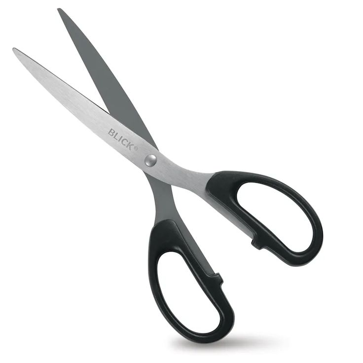
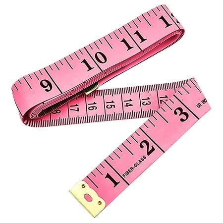
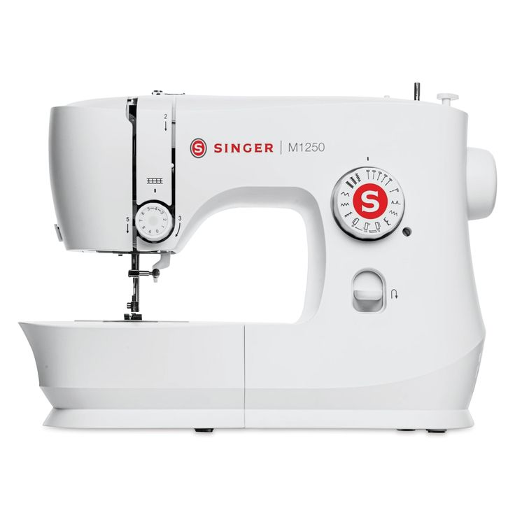
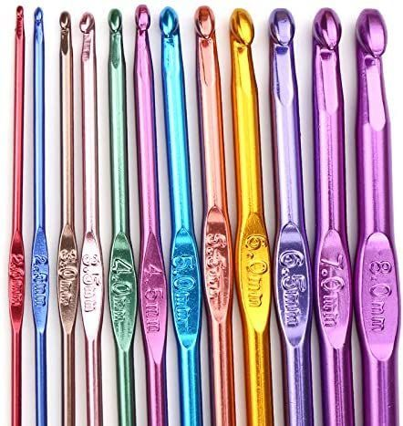
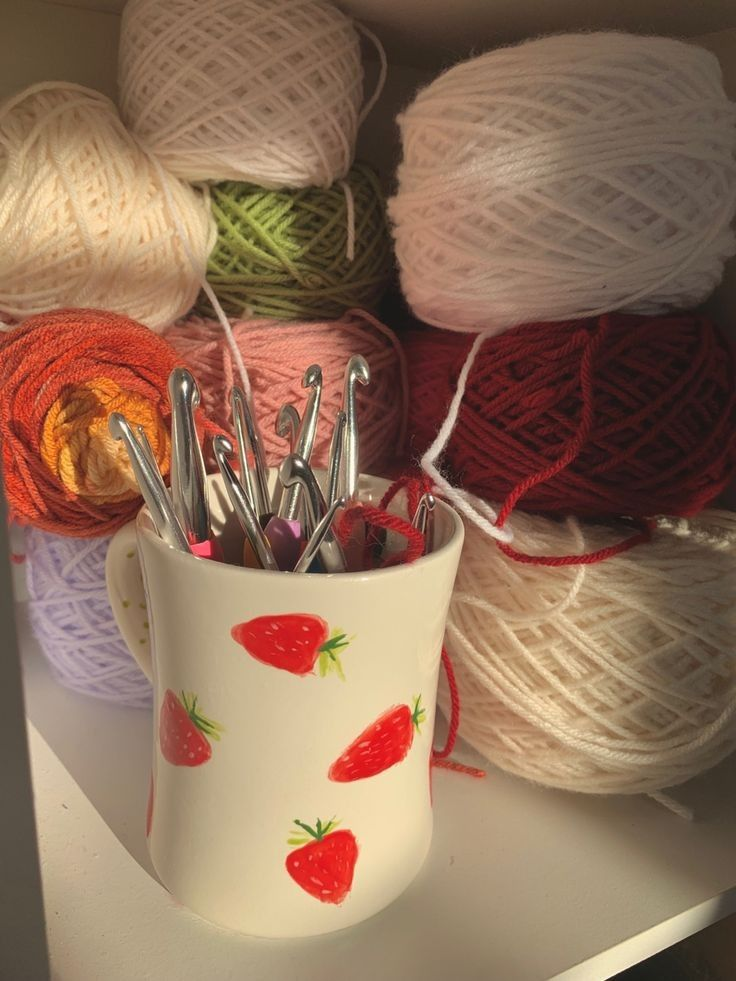

Fabric Types & Their Uses
| Fabric Type | Best Uses |
|---|---|
| Cotton | Breathable and easy to sew; great for clothing and quilting. |
| Fleece | Warm and soft; perfect for blankets and winter wear. |
| Linen | Lightweight and airy; great for summer clothes and decor. |
| Canvas | Durable and thick; ideal for bags, upholstery, and accessories. |
Essential Tools
- Scissors 
- Measuring Tape 
- Sewing Machine 
- Yarn & Hook
 
Project Ideas
Get inspired with these beginner and advanced ideas:
- Simple tote bag
- Granny square blanket
- Drawstring pouch
- Bucket hat